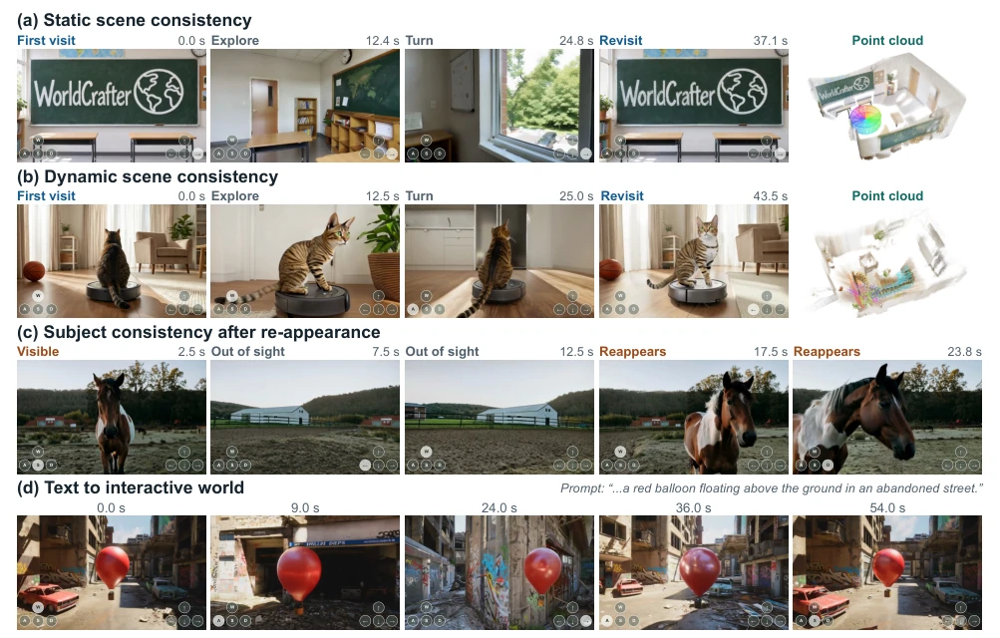
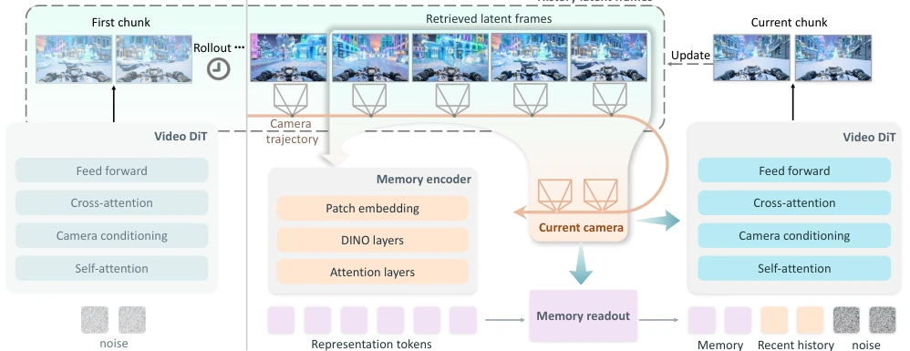
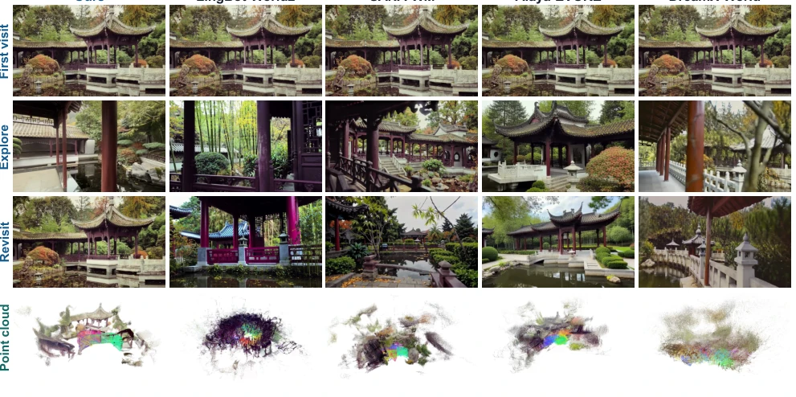
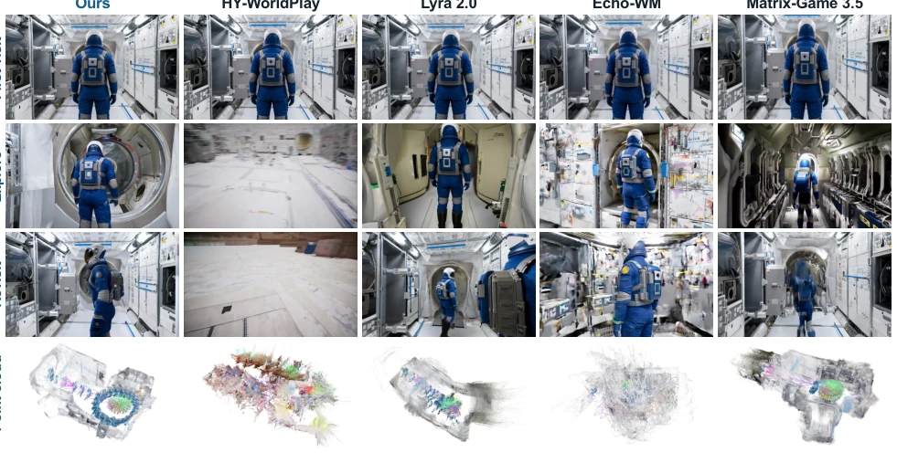
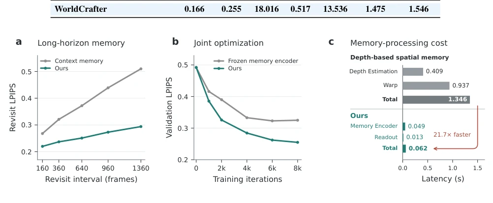

WorldCrafter 试图用隐式记忆给视频世界模型“补脑”，解决长程探索中的“健忘症”。这思路比显式 3D 重建更灵活，毕竟不用硬算深度图，省了算力也避开了动态场景的坑。但别以为有了记忆就能永生，实验里复杂轨迹下一致性还是会崩，属于“记得住大概，记不住细节”。蒸馏后推理速度确实快，但显存和计算成本依然不低，毕竟要维护一个隐式 3D 空间。总的来说，是个实用的工程改进，但离真正的“物理引擎”还差口气。
WorldCrafter attempts to "supplement the brain" for video world models using implicit memory, addressing the "amnesia" in long-range exploration. This approach is more flexible than explicit 3D reconstruction, as it avoids explicitly calculating depth maps, saving computational power and circumventing pitfalls in dynamic scenes. However, do not assume that having memory ensures immortality; in experiments, consistency still collapses under complex trajectories, characterized as "remembering the gist but not the details". While inference speed is indeed fast after distillation, VRAM and computational costs remain significant, as maintaining an implicit 3D space is required. Overall, it is a practical engineering improvement, but still falls short of a true "physics engine".
Video world models often suffer from "amnesia" during long-range interactions; once the viewpoint shifts or time extends, previously generated scenes become unrecognizable. Existing methods either rely on full-history attention, incurring prohibitively high computational costs [9, 73]; or employ explicit spatial memory, relying on depth estimation, which tends to fail in dynamic scenes [76, 88]. Although implicit memory can compress history, it often sacrifices appearance fidelity [63]. WorldCrafter aims to resolve these issues by leveraging implicit 3D perceptual memory to achieve camera-controlled long-range consistency under a fixed token budget, avoiding structural collapse upon revisit seen in DreamX-World [16] or Lyra 2.0 [60].

Figure 1. WorldCrafter enables consistent, camera-controlled exploration. It preserves scene appearance and structure across revisits in static (a) and dynamic (b) scenes, as illustrated by reconstructed point clouds. Subjects remain consistent after leaving and re-entering view (c). Users can also generate and explore scenes from text descriptions alone (d).
方法Method
整体采用自回归分块生成框架。首块仅依赖相机姿态，后续块引入隐式记忆。核心创新在于记忆模块：1) 记忆编码器：初始化自 LagerNVS [63]，将历史潜在帧与相机姿态映射为紧凑的 3D 感知表示，无需显式 3D 重建。2) 记忆读出：采用 Pose-guided 机制，根据未来轨迹查询固定大小 Token，比 Pose-free 更精准。3) 联合训练：编码器、读出模块与视频 DiT 协同优化，确保记忆空间与生成空间对齐。4) 蒸馏：采用金字塔蒸馏与混合噪声模型，平衡视觉保真度与主体跟随能力，实现实时推理。此外，相机条件通过 UCPE 分支注入，历史检索采用最大覆盖策略而非相似度排序，进一步提升了视野覆盖的鲁棒性。
The overall framework adopts an autoregressive chunked generation architecture. The first chunk relies solely on camera pose, while subsequent chunks introduce implicit memory. The core innovation lies in the memory module: 1) Memory Encoder: Initialized from LagerNVS [63], mapping historical latent frames and camera pose into a compact 3D perceptual representation without explicit 3D reconstruction. 2) Memory Readout: Utilizes a Pose-guided mechanism to query fixed-size tokens based on future trajectories, offering greater precision than Pose-free approaches. 3) Joint Training: The encoder, readout module, and video DiT are co-optimized to ensure alignment between the memory space and generation space. 4) Distillation: Employs pyramid distillation and a mixed noise model to balance visual fidelity and subject following capability, enabling real-time inference. Additionally, camera conditions are injected via the UCPE branch, and history retrieval adopts a max coverage strategy rather than similarity ranking, further enhancing the robustness of field-of-view coverage.

Figure 2. Overview of the WorldCrafter pipeline. The video DiT generates the first chunk conditioned on camera poses, before any history is available. At subsequent rollout steps, max-coverage history retrieval selects latent frames based on the current camera poses, and the memory encoder maps them into a compact 3D-aware representation. A pose-conditioned memory readout module extracts fixed-size memory tokens that, together with recent history, guide generation of the current chunk. Generated frames are added to the history for subsequent rollouts.
The datasets cover OSP, DL3DV, and MIND synthetic data, constructing 725 video benchmarks that include both static and dynamic scenes. Eight baseline models are compared, including DreamX-World [16] and Lyra 2.0 [60], among others. Metrics encompass consistency (MEt3R, LPIPS), camera control (RotErr), and VBench quality. WorldCrafter achieves a 47.6% improvement in revisit consistency and records the lowest camera control error. Ablation studies demonstrate that Pose-guided readout and the max coverage retrieval strategy are effective, while freezing the encoder leads to performance degradation. The memory processing cost is 21.7 times faster than depth-based spatial memory, validating the efficiency advantage of implicit memory, though consistency still degrades under long trajectories.

Figure 3. Qualitative long-horizon revisit comparison in a static scene. Rows show the first observation, an intermediate view during exploration, the matched revisit, and the point cloud reconstruction of the generated video, respectively.

Figure 4. Qualitative long-horizon revisit comparison in a dynamic scene. Rows show the first observation, an intermediate view during exploration, the matched revisit, and the point cloud reconstruction of the generated video, respectively.

Figure 5. Ablations of implicit 3D-aware memory, joint optimization, and memory-processing efficiency. (a) Long-horizon revisit consistency of context memory and WorldCrafter’s implicit 3D-aware memory, measured by LPIPS across revisit intervals. (b) Validation LPIPS for joint optimization and frozen memory-encoder training at matched iterations. (c) Per-chunk memory-processing latency of depth-based spatial memory and WorldCrafter.